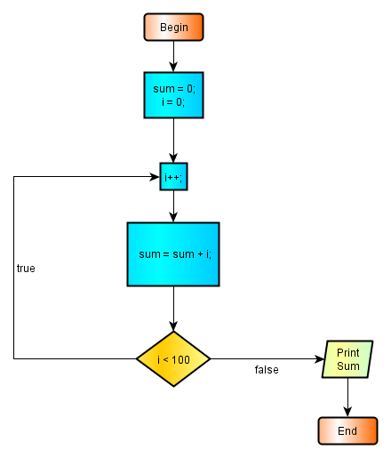

2.8.2 - Do-While Loops
The do-while loops are a variant of while loops. They are exactly the same with the while loops, except the loop control is made at the end of the loop. The structure of the do-while loops is as follows :
do { body of the loop } while (boolean-expression);
Note that the loop sentinel set the loop repetition flag at the end of the body of the loop. After the boolean expression used as loop sentinel, a semicolon is required.
Let us try a do-while loop by calculating the sum of the first 100 integers.
First we will make a flowchart of the program:

2.8.2 image - 1 : do-while loop
Here is the program:
package preliminary; public class DoWhile { public static void main(String[] args){ int i = 0; int sum = 0; do { i++; sum = sum + i; } while (i < 100); // end do System.out.println("The Sum Of The First 100 integers is : " + sum); System.out.println("i = " + i); } // end main } //end class DoWhile
The result of this program :
The Sum Of The First 100 integers is : 5050 The value of i is : 100
The program flow of he above example is exactly the same as in the example with while loop. Here, only the loop sentinel is evaluated at the end of the loop.
The do-while loops are not frequently used in favor of the while loops.